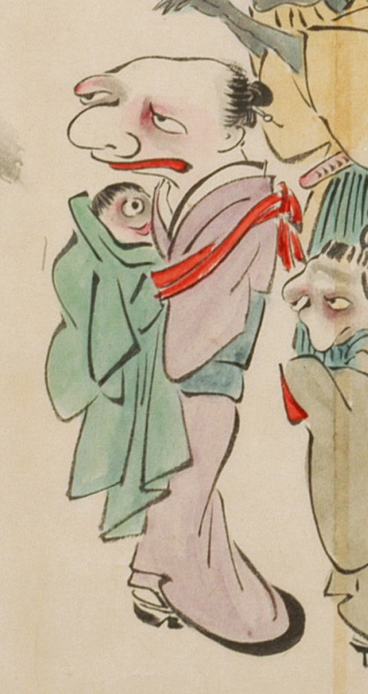

一つ目の赤子の化物。肌は赤黒く、頭に髪が生えている。大きな目玉が中央に1つあり、鼻はなく、口が大きい。緑色の祝い着にくるまれて、女の化物に抱かれている。
出典：親書誌：U426_nichibunken_0053：化物婚礼絵巻；バケモノコンレイエマキ／日付：2006／資源識別子：U426_nichibunken_0053_0023_0007
Copyright (c)2010- International Research Center for Japanese Studies, Kyoto, Japan. All rights reserved.